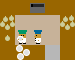

Bidipta Sarkar
Overcooked in Thousands of Kitchens: Training Top Performing Agents in Under a Minute
A case study of speeding up Overcooked training performance by 60x.
Written by: Bidipta Sarkar
Edited by: Kayvon Fatahalian and Brennan Shacklett
In my reinforcement learning research, the high cost of simulating virtual environments is a significant obstacle to training agents. For example, a task of high interest to me is training agents to play Overcooked, a popular cooking game that also serves as a benchmark for cooperative multi-agent studies.

It requires about eight million steps of game experience to train a pair of agents that converge to a stable equilibrium policy in Overcooked’s “Cramped Room” layout (pictured above). The open source implementation of Overcooked, which is written in Python using Python’s multiprocessing library, runs at 2000 steps per second on my 8-core AMD CPU1, so generating the necessary agent experience takes over an hour. Executing all other operations needed for training, including policy inference on all eight million simulation steps and backprop for policy training, requires less than a minute on an A40 GPU. Clearly, training overcooked agents is limited by the speed of the Overcooked environment simulator.
Waiting an hour to see training results limits my productivity when hyperparameter tuning or training multiple agents, especially when I’m aiming to develop policies that perform well with human counterparts. Given that Overcooked is a simple environment, having simulation be the bottleneck seemed silly, so I sought to see how fast I could make Overcooked environment simulation go.
TL;DR: Using the Madrona Game Engine, I implemented a GPU-accelerated drop-in replacement for the original Overcooked Python implementation. When simulating 1000 Overcooked environments in parallel, my implementation generates 3.5 million steps of experience per second on an A40 GPU. As a result, the time to simulate eight million environment steps drops from an hour to three seconds, allowing me to train a policy in just one minute using an A40 GPU.
The speed of this simulator opened up new possibilities for conducting extensive hyperparameter sweeps in Overcooked. In particular, it provided me with the opportunity to train numerous policies in the same amount of time it previously took to train a single policy. Since I was able to run more experiments, I was able to find diverse sets of equilibrium policies that represent different “conventions” that Overcooked teams could converge to, about a third of which consistently achieved the maximum possible score.
If you want to try it out, see this repo for the source code and a colab notebook where you can train your own Overcooked agent in minutes and see it play in the original Javascript version of the game.
RL Implications of High-Performance Simulation
The high performance of my Overcooked environment significantly impacted the types of experiments I conducted in recent RL projects. I have been able to conduct more thorough hyperparameter sweeps since individual training runs are significantly faster. In addition to faster training times, I’ve experienced more stable training curves as I’ve increased the number of environments simulated in parallel.
I saw that my environment achieved a peak throughput of around 14 million steps per second when simulating 10,000 environments in parallel, but standard self-play did not benefit from having more than 1000 environments. Instead of letting these "essentially free" environments go to waste, I took this as an opportunity to investigate more creative uses of the replay buffer. Specifically, I used the remaining 9000 environments to simulate interactions with different policies, referred to as cross-play in multi-agent literature, which allowed me to draw out diversity and robustness in my trained agents. If you are interested in playing with the final agents trained using this technique, click the collapsed region below or go to this link:
Use the arrow keys and space bar to move around and interact with the objects. Select the "Layout" and "Algo" to play with a particular AI agent; CoMeDi was the strongest in our study. You may need to click on the region around the "Press enter to begin!" if pressing enter does not work immediately.
Looking ahead, I’m interested in the new environments that people will implement using Madrona and how faster simulation performance will influence RL training workflows and the tasks we choose to learn. Moreover, since the design of most modern RL learning algorithms assumes that experience collection is costly, I am excited to see how the ability to acquire experience quickly using tens of thousands of parallel simulations on a single GPU might motivate new policy learning algorithms designed specifically for regimes where agent experience is abundant.
In addition to porting Overcooked, we have also implemented other popular RL training environments using Madrona’s high performance APIs: OpenAI's 3D Hide and Seek environment, the Hanabi card game, and Cartpole. I have also ported the Multi-Agent PPO algorithm to work with many of the games designed in Madrona by following PantheonRL’s interface for multi-agent environments.
Readers interested in using these high-performance simulators to conduct RL experiments more quickly should check out the links above. Those that are interested in the technical details of how we architected a high-performance implementation of Overcooked should continue reading.
Implementing a High Performance Overcooked Simulator
The rest of this article is targeted at readers interested in writing high-performance, GPU accelerated simulators for their own RL tasks. I will go into technical detail of how I ported Overcooked to the GPU using a game engine called Madrona. You can think of Madrona as a game engine designed to make it easier to implement custom RL environments that run efficiently in large batches on the GPU (up to tens of thousands of environments in parallel on a single GPU). Madrona was presented at the SIGGRAPH 2023 conference and you can learn more about the system here. (Disclosure: I am a co-author of the paper.)
In part 1 of this article I will describe a simple port of Overcooked to Madrona that retains the basic structure of the original Overcooked simulator, but runs many instances of the simulator in parallel (one instance per GPU thread). The port increases performance from simulation 2000 steps per second to almost two million steps per second.
In part 2 I will show how to restructure the simulator to reveal additional parallelism within each environment. These changes required more advanced data-parallel thinking, but led to a performance increase to 3.5 million steps per second in my simple two-agent Overcooked environment. While the more advanced restructuring is admittedly overkill when running simple Overcooked environments, it yields notable performance advantages when running Overcooked environments with larger kitchens and more cooks, and it is indicative of the type of parallel thinking required to create performant batch implementations of other, more complex RL environments. (For example we’ve used Madrona to implement a version of OpenAI’s Hide And Seek 3D environment that involves ray casting and physics, yet still can be stepped at nearly two million frames per second on a high end GPU.)
By sharing my experiences, I hope to provide a useful example that can assist you in creating your own high-performance RL environments using the Madrona game engine.
Part 1: A Basic Parallel Implementation on the GPU
Step 1: Preparation to Port: Simplifying Overcooked’s Python Implementation
My ultimate goal was to create a high-performance GPU implementation of Overcooked. Since Madrona is a C++ API, this requires porting game logic from Python to CUDA C++.
However, prior to attempting the port, my first step was to extract the smallest subset of code from the Python Overcooked repo needed to reproduce the MDP of the original game. This was the only code I planned to port to CUDA C++. I did not touch any code related to visualizing the game, as I could simply rely on the visualizations provided by the original implementation.
The most important part of this preparation step was replacing more complex Python data structures (like Python dictionaries) with multi-dimensional arrays, since multi-dimensional arrays have a straightforward mapping to the collection-oriented data structures required by Madrona (see step 2 below). I also replaced the Python function for computing the task’s reward with a lookup table. The result was 400 lines of clean Python code that executed the Overcooked MDP. Although my goal during this step was to distill the original Python implementation to a clean piece of code to make porting easier, this “simplified” version of the Python code actually ran 50% faster than the original. (3000 steps per second!)
Step 2: Rewriting Overcooked using Entity Component System Concepts
An experienced GPU programmer knows that one way to port Overcooked to run N environments at once on the GPU would be to take the Python game logic from step 1, which defines how to step one environment, and directly port that logic to CUDA C++ while changing all game state variables to be arrays of length N. In this design, every GPU thread executes the logic for a single unique environment instance by reading and writing to these game state arrays at the index given by the current threadId. This approach has several drawbacks, which include:
- Code complexity. As much as possible, I prefer to write logic that expresses how to step one world at a time (or even one agent in a world at a time in a multi-agent case). Introducing length N arrays throughout the code to store state for all environment instances creates complexity and introduces the possibility of programmer errors. Although not a major concern in designing the Overcooked environment, the complexity of array-based programming gets even higher if environments contain different numbers of objects or require dynamic object allocation or deletion during game play.
- Code performance. Since the programmer chooses how to parallelize the code — one instance per thread, it limits the amount of parallelism available by not allowing any logic from the same environment instance to run in parallel. When environments with multiple agents or many objects in an environment, this can be a major limitation.
Instead, Madrona requires simulators to adopt a software design pattern called the Entity Component System (ECS), which yields code that in most cases can be authored in “single world programming model” and is well-suited for high levels of optimization and fast parallel execution on the GPU. It also naturally extends to more complex scenarios when environments have different numbers of agents or objects, and must dynamically create and destroy objects as a result of play.
The main ideas of the ECS design pattern are simple:
The state of a game is organized as collections of game entities. For example, in Overcooked an entity might be a chef or a food item.
The state of each entity is determined by the value of the entity's components. For example, in Overcooked the chef has components representing the position, orientation, currently held object, and next chosen action.
Those familiar with databases (or dataframes) might think of a collection of entities as a logical table, where each row in the two corresponds to an entity, and each column stores the values for a certain component. Given a list of all a game’s entities and the components each of these entities requires, the Madrona runtime can store the component values for all entities with the same components, across all game instances, in a single contiguous table for efficient access and compact storage. Here’s an example of that table for Chefs:
| World ID | Agent ID | Action | Observation | Position | Orientation | Held Item | Reward |
|---|---|---|---|---|---|---|---|
| 0 | 0 | INTERACT | 3D Array (5 × 4 × 26) | 6 | WEST | None | 0.0 |
| 0 | 1 | NORTH | 3D Array (5 × 4 × 26) | 11 | NORTH | None | 0.0 |
| 1 | 0 | SOUTH | 3D Array (5 × 4 × 26) | 12 | SOUTH | Onion | 20.0 |
| 1 | 1 | INTERACT | 3D Array (5 × 4 × 26) | 8 | EAST | Soup Dish | 20.0 |
| … | … | … | … | … | … | … | |
| 999 | 0 | STAY | 3D Array (5 × 4 × 26) | 7 | NORTH | None | 3.0 |
| 999 | 1 | INTERACT | 3D Array (5 × 4 × 26) | 13 | WEST | Onion | 3.0 |
Conveniently, the game developer doesn’t need to think about how Madrona lays out component data structures when expressing logic. They only need to write ECS systems that execute in a data-parallel manner to read and modify the values of components.
For example, here’s an example of a system that is run in a data-parallel manner once for each world. Each invocation of this function iterates over all pairs of agents, checking for collisions and updating the position and orientation of agents accordingly. Notice that this code uses accessors to get at component data without knowledge of the underlying data layout or even what world is currently executing.
1: // Run once per agent 2: inline void observationSystem(Engine &ctx, AgentID &id) 3: { 4: WorldState &ws = ctx.singleton<WorldState>(); 5: int32_t current_player = id.id; 6: 7: for (int loc = 0; loc < ws.size; loc++) { 8: LocationXObservation &obs = ctx.get<LocationXObservation>(ctx.data().locationXplayers[current_player * ws.size + loc]); 9: LocationData &dat = ctx.get<LocationData>(ctx.data().locations[loc]); 10: fillLocInfo(obs, ws, dat); // Constant-time operation 11: } 12: 13: for (int i = 0; i < ws.num_players; i++) { 14: PlayerState &ps = ctx.get<PlayerState>(ctx.data().agents[i]); 15: int32_t pos = ps.position; 16: LocationXObservation &obs = ctx.get<LocationXObservation>(ctx.data().locationXplayers[current_player * ws.size + pos]); 17: fillPlayerInfo(obs, ws, current_player, ps, i); // Constant-time operation 18: } 19: }
Although the code I wrote above doesn’t look parallel, Madrona runs the code in parallel by executing thousands of environments concurrently on the GPU (parallelism across environments). The full logic of the Overcooked simulator is expressed as a set of system functions like the one above that need to be executed each simulation step.
By moving from python to C++, and executing many environments in parallel to utilize all the GPUs cores, this initial port yielded a substantial performance improvement: approximately two million steps per second with a thousand environments. This simple implementation required essentially no knowledge of parallel computing principles or CUDA; Madrona automatically handled GPU parallelism across multiple game environments.
Part 2: Higher Performance via Intra-Environment Parallelism
Increasing throughput from 3000 to 2M steps/sec is a notable performance increase, but we can do better. We’d like to not only parallelize across worlds, but parallelize computation within each world as well. Overall, using the techniques for harnessing intra-world parallelism in the remainder of the section I was able to increase performance by an additional 75%, achieving 3.5 million experience steps per second.
There are three major places where additional parallelism opportunities exist in Overcooked, but used for-loops in the initial port:
- Generating agent observations, a 3D array for each agent which requires iterating over all tiles in the environment.
- Detecting and handling collisions between agents
- Handling interactions between agents and the environment
This is where the higher-level ECS abstractions of Madrona’s programming model really begin to help. Systems not only run in parallel across worlds, but they can also execute in parallel across collections of entities. To express per-entity logic in an ECS, the programmer specifies a query that selects a collection of entities having a desired set of components (e.g., all entities having the components of a chef), and then the system function is applied individually to each of the matching entities. The components matching a query get passed to the function, so the logic of the function is written cleanly in terms of the needed components.
One example of leveraging queries to implement fine-grained parallelism is how I parallelized observation generation.
Step 3: Parallelize Observation Generation
Each agent is given an observation of each tile in the environment, represented as a 3D array. Specifically, at each (x, y) location, there are 26 features representing some information about the state of the world. For instance, the feature 0 indicates if the agent is present at this location, while feature 21 indicates whether there is a soup object at a location.
- Agent is present in this location (1 if true, else 0)
- Agent is present in this location and oriented north (1 if true, else 0)
- Agent is present in this location and oriented south (1 if true, else 0)
- Agent is present in this location and oriented east (1 if true, else 0)
- Agent is present in this location and oriented west (1 if true, else 0)
- Partner is present in this location (1 if true, else 0)
- Partner is present in this location and oriented north (1 if true, else 0)
- Partner is present in this location and oriented south (1 if true, else 0)
- Partner is present in this location and oriented east (1 if true, else 0)
- Partner is present in this location and oriented west (1 if true, else 0)
- Tile is pot (1 if true, else 0)
- Tile is counter (1 if true, else 0)
- Tile is onion source (1 if true, else 0)
- Tile is tomato source (1 if true, else 0)
- Tile is dish source (1 if true, else 0)
- Tile is serving area (1 if true, else 0)
- Number of onions in pot (or 0 if soup is currently being cooked)
- Number of tomatoes in pot (or 0 if soup is currently being cooked)
- Number of onions in soup (or 0 if no soup being cooked or present)
- Number of tomatoes in soup (or 0 if no soup being cooked or present)
- Time remaining to cook soup, or 0 if done or no soup present
- Soup object at location (1 if present, else 0)
- Dish object at location (1 if present, else 0)
- Onion object at location (1 if present, else 0)
- Tomato object at location (1 if present, else 0)
- Low time remaining: 1 if less than 40 timesteps left, else 0
Constructing the observations for a single agent therefore requires iterating over each tile in the environment to construct each “feature” that the agent observes. The features for each tile could be processed independently for each agent, so the observations for the first tile could be generated independently from all other tiles. Therefore, I defined a new entity that represents an agent’s understanding of the location along with a system that generates its specific component of the observation. For instance, in the simple five by four grid with two agents, there are 20 of these “location” entities per agent, so 40 entities generate the observations in parallel.
For example, here’s a rewrite of the observations function that now defines what to do per-map location, not per world. (Notice there are no for loops over agents or locations in the code.)
1: // Run once per location-agent pair 2: inline void observationSystem(Engine &ctx, LocationXObservation &obs, LocationXID &id) 3: { 4: WorldState &ws = ctx.singleton<WorldState>(); 5: 6: int32_t loc = id.id % (ws.size); 7: int32_t current_player = id.id / (ws.size); 8: 9: int32_t shift = 5 * ws.num_players; 10: LocationData &dat = ctx.get<LocationData>(ctx.data().locations[loc]); 11: Object &obj = dat.object; 12: 13: fillLocInfo(obs, ws, dat); // Constant-time operation 14: 15: if (dat.past_player != -1) { 16: clearPastPlayerObs(obs, ws, dat, current_player); // Constant-time operation 17: } 18: 19: if (dat.current_player != -1) { 20: PlayerState &ps = ctx.get<PlayerState>(ctx.data().agents[dat.current_player]); 21: fillNewPlayerObs(obs, ws, current_player, ps); // Constant-time operation 22: } 23: }
Now, when the Overcooked simulator invokes the new observation system, the code is run in parallel across all location-agent pairs of all instances. For a 4x5 Overcooked map, when running a batch of 1000 environments, this is 40,000 parallel invocations of the observationSystem function.
Step 4: Parallelize Collision Detection
The overcooked simulator must detect collisions between the agents in an environment. To detect if a collision has occurred, the original Overcooked-AI code loops over all pairs of agents, and checks if any pair of agents is trying to move to the same location or have “swapped” spots. If this ever happens, no agent is allowed to move to a new location for that turn, and only the agents’ orientations are updated. Otherwise, both the positions and orientations of all agents are updated. Checking collisions for all pairs can be expensive if an Overcooked environment involves many agents.
To reduce the cost of collision detection, I moved to an algorithm that takes a constant amount of time per agent by using some additional memory per tile. The algorithm is more advanced in that, unlike the previous examples, it requires the use of fine-grained synchronization (atomics) to prevent race conditions between data-parallel function invocations in the same system, but it significantly reduces the amount of computation performed as the number of agents increases.
I modified the implementation to save information about the agents’ positions and proposed positions as new components for the tiles. Specifically, each tile keeps track of the id of the current agent that is on it (if any), along with at most one of the agents that wants to move there. Collisions are resolved as follows:
First, each agent proposes a new tile to move to. Within this tile, there is an atomic component representing the id of at most one future agent that wants to move to it. We store the id of this agent using a relaxed atomic store. If multiple agents wish to move to the same tile, the relaxed store guarantees that one of them will be the final value of the tile at the end of the system. As python-like pseudocode:
1: # run once per player 2: def get_proposed_moves(world, player, action): 3: if action is INTERACT: 4: player.proposed_position = player.position 5: player.proposed_orientation = player.orientation 6: else: 7: player.proposed_position = position when moving according to action, handling world terrain 8: player.proposed_orientation = orientation corresponding to action 9: 10: location_to_check = entity corresponding to player.proposed_position 11: location_to_check.future_player.store_relaxed(player.id)
Next, in parallel each agent checks if a collision has occurred. If an agent sees that the “future agent” of the tile it wants to move to is not themself, then it determines a collision has occurred. We can also detect “swapping” behavior by checking the IDs of the agents at the current and future locations. If any collisions have occurred, we store that information into a singleton value for the environment using a relaxed write. As python-like pseudocode:
1: # run once per player 2: def check_collisions(world, player): 3: old_location = entity corresponding to player.position 4: new_location = entity corresponding to player.proposed_position 5: if (new_location.future_player != player.id): 6: world.should_update_pos.store_relaxed(False) 7: 8: # check swapping 9: other_player = new_location.current_player 10: if other_player is not None and other_player is not player: 11: if old_location.future_player == player.id: 12: world.should_update_pos.store_relaxed(False)
Finally, each agent moves to the new tile if there is no collision, or stays on their original tile if a collision has occurred.
Step 5: Parallelize Interaction Processing
Agents in Overcooked have the ability to “interact” with their environment by facing a specific tile and choosing the INTERACT action. For instance, interacting with a pile of onions with an empty hand allows the agent to take an onion, and interacting with cooked soup while holding a plate fills the plate with soup.
A quirk of the original Overcooked implementation is that it processes the interactions of agents with tiles in the order of their IDs. For instance, if agent 1 has a plate, agent 2 has nothing, and both interact with an empty counter at the same time, it will seem like agent 1 passed the plate to agent 2, because agent 1 will first place down the plate and agent 2 will pick up that plate. However, if the scenario was flipped so that agent 2 has the plate to begin with, it will only seem like agent 2 placed down the plate while agent 1 did nothing. Since we want our simulation to be backwards-compatible with the original game, we need to be careful when parallelizing this process since the order of execution impacts simulation output.
The key observation is that at most four agents can interact with a single tile at once. This means that each tile can have an array of four agent IDs, and we can use atomic “fetch add” operations to have an unsorted list of agents that have interacted with that tile. Afterwards, each agent can determine how many other agents need to interact with the tile before it can perform its interaction, allowing for safe parallelization in an ECS system. This is implemented by calling four systems back-to-back, where the i’th system processes the interaction required of the i’th lowest ID of all players interacting with the tile.
Result of Intra-Environment Parallelism
When there are only two agents, the additional logic introduced by the techniques in steps 4 and 5 undermine the benefits of parallelizing the interactions over agents. When simulating 1000 environments of the Cramped Room layout, this additional parallelism only brings the steps-per-second from 2 million to 3.5 million.
The real benefit of intra-environment parallelism becomes clearer in layouts with large numbers of agents. When testing on a much larger grid with 30 agents, we find a 10 times increase, going from 7000 to 70,000 steps per second.
Closing Thoughts
When reflecting on the process of porting Overcooked to Madrona, I feel it was a smoother process when compared to existing alternatives for creating GPU-accelerated environments, like PyTorch, Taichi Lang, or Direct CUDA C++. In particular, I appreciated only needing to think about how to implement a single instance of Overcooked while letting Madrona handle the rest. The ECS design required me to consider how the simulation could be broken down into distinct entities, which encouraged me to re-architect parts of the code that ran in serial.
I hope this post inspires you to try implementing your own environments in Madrona. The Madrona RL Environment repo contains many examples of standard RL environments, and the general Madrona Engine homepage contains more resources for handling 3D environments.
Footnotes:
Benchmarked using 8 cores of an AMD EPYC 7402 CPU